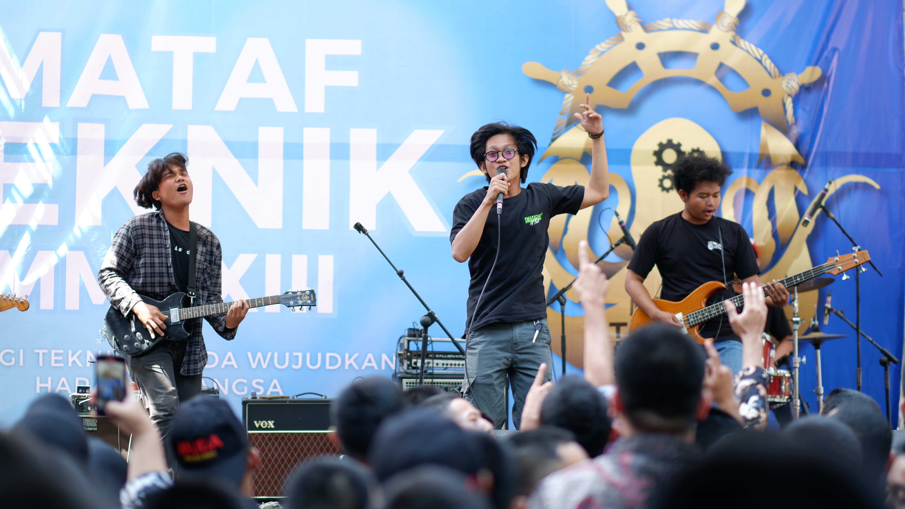

Foto |
Komposisi |
|  |
Shutter Speed : 1/500 ISO : 200 Aparture : F 1.2 Device : FUJI XT-200 Fujinon 56mm F1.2 |
 |
Shutter Speed : 1/60 ISO : 400 Aparture : F 3.2 Device : NIKON D3200 Nikkon 50mm F1.8 |
Foto |
Komposisi |
|
Shutter Speed : 1/60 ISO : 400 Aparture : F 13 Device : NIKON D3200 Nikkon 50mm F1.8 |
|
|
Shutter Speed : 1/125 ISO : 2500 Aparture : F 4.8 Device : FUJI XT-100 Fujinon 70-200mm F2.3 |